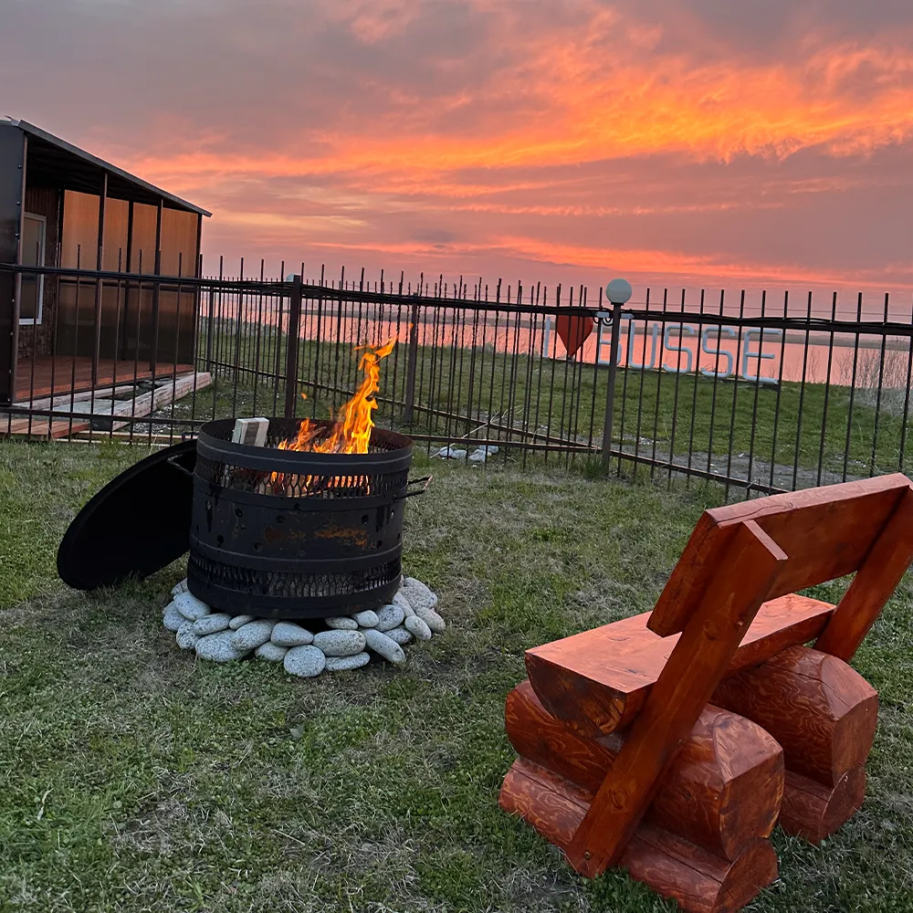
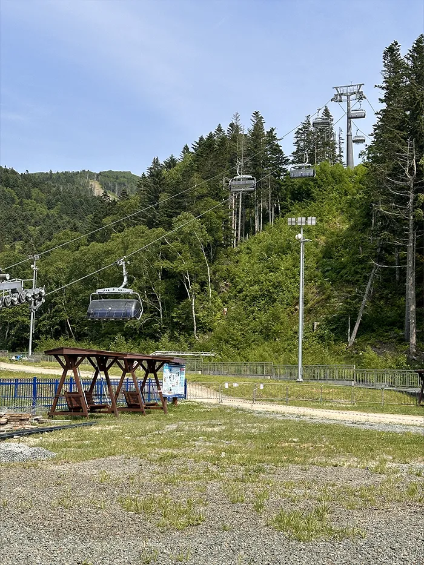
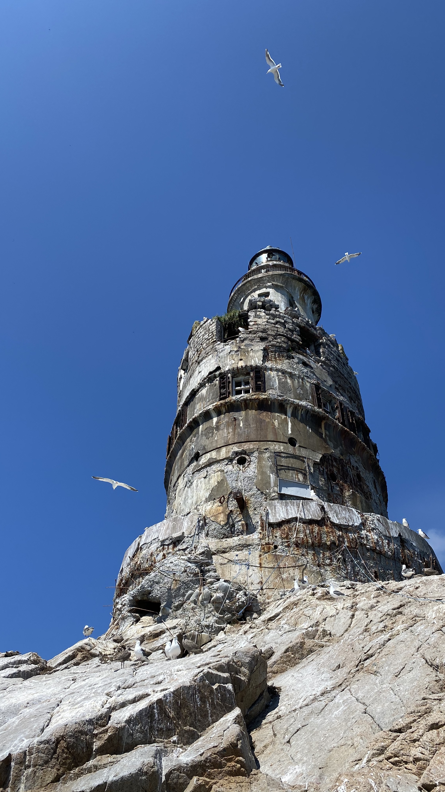

Sakhalin travelogue
My top 3 favorite places and why I love them as much as I do

Saltwater lagoon
Busse Lake
Don’t let the name fool you. Lake Busse isn’t actually a lake, but a saltwater lagoon in Southern Sakhalin. This hidden gem has a wild, untamed beauty that feels almost otherworldly.
What makes Lake Busse truly exceptional is the way it transforms with the tides. At low tide, massive oyster beds emerge from the water like a secret feast unveiled by the sea. But these aren’t your typical oysters from Canada or France. These are giant Pacific oysters, fresh from the ocean, often so large they can serve as an entire meal on their own. Visitors are welcome to walk right out onto the exposed beds, pick their oysters straight from the lagoon, shuck them open, and taste the ocean in its purest form.
Imagine walking across a field of oysters, each one the size of a full meal. It’s a shellfish lover’s dream, unlike anything else on Earth.

Mountain Air
Gorny Vozdukh
Right in the heart of Yuzhno-Sakhalinsk rises Gorny Vozdukh, a mountain that has always felt like the island’s living, breathing soul. When I lived on Sakhalin, it was my favorite place to hike, bike, and fill my lungs with crisp mountain air. The trails weave through lush valleys, dense forests, and sparkling springs, leading up to a peak where surreal panoramic views stretch endlessly across land and mountains.
In winter, the mountain transforms into Sakhalin’s ski hub, with 10 trails covering more than 23 kilometers. It’s an unbeatable winter sports getaway, just minutes from the city center. And the best part? Night skiing. Under the glow of floodlights, you carve through the snow while the city glitters far below.

Historical Treasure
Aniva Lighthouse
Down at the southern tip of Sakhalin, there’s a place that feels straight out of a movie: Aniva Lighthouse. Everyone on the island knows it, and for good reason. Built by the Japanese back in 1939, it was a real feat of engineering at the time. The lighthouse kept watch over these rough waters for decades, but after it shut down in 2006, it was left to the mercy of the ocean, the storms, and curious adventurers who managed to reach it.
These days, Aniva is a mix of ruin and wonder. Inside, it’s crumbling and eerie, like a ghost of its past life. Outside, it’s pure magic, a lonely tower standing tall against the endless Pacific, battered but still defiant.